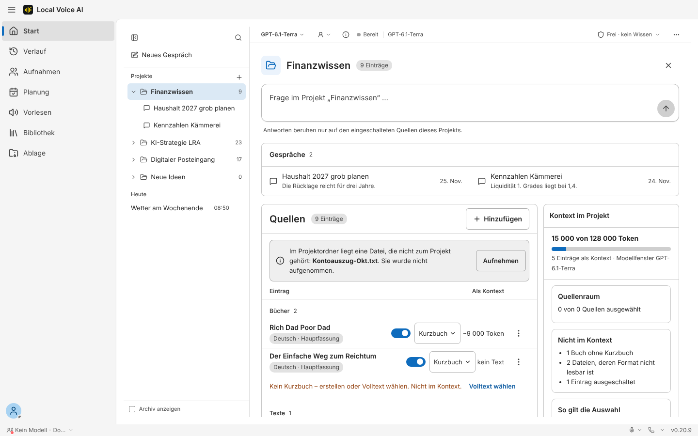
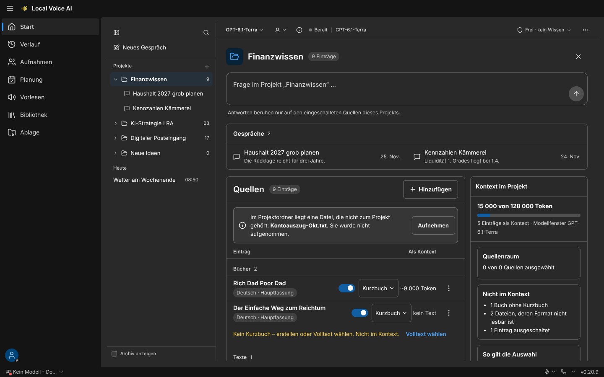
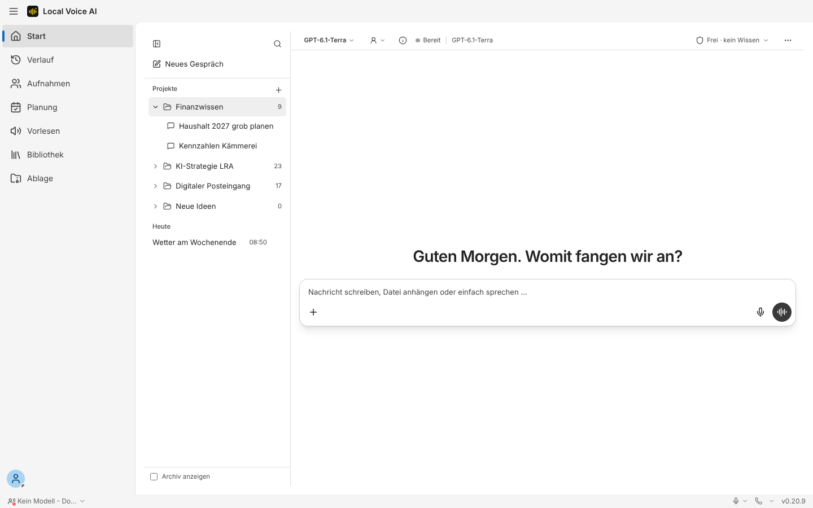
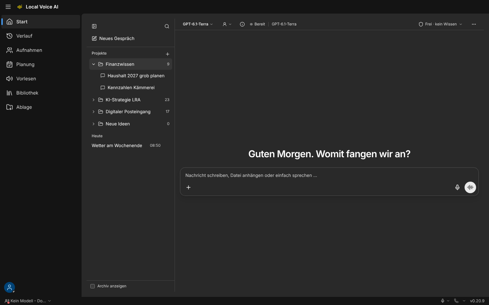
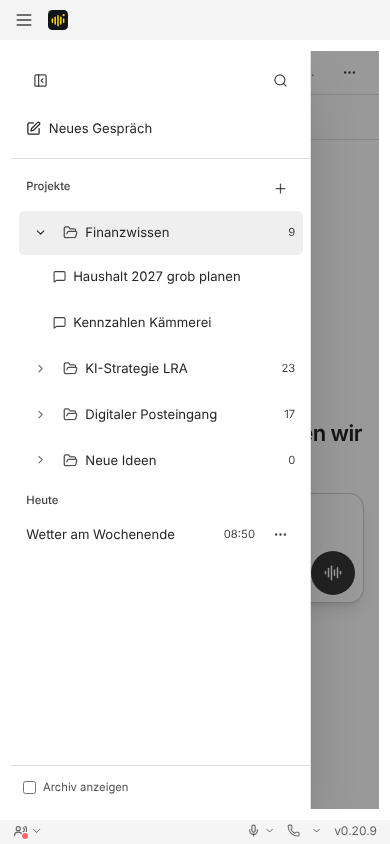
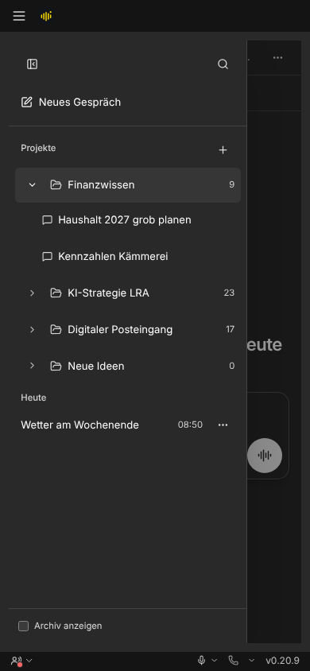
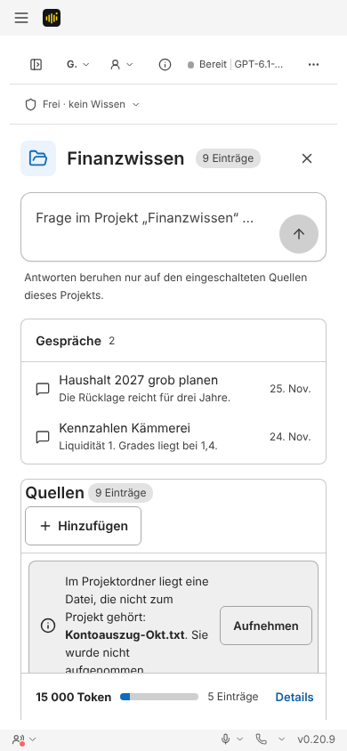
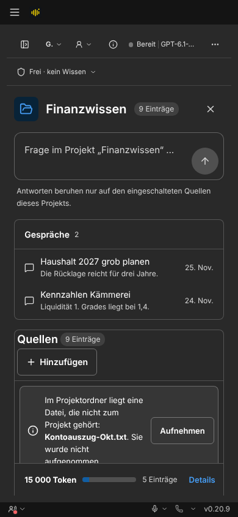

Projekte als Räume im Chat (lva#826)
Muster: „Rooms“ aus EXXETA/exxperts (Apache-2.0) und Ordner aus Open WebUI, nur das Konzept, kein Code. Der Menüpunkt „Projekte“ entfällt; Projekte stehen im Chat (Start) über dem Verlauf.
- Seitenleiste des Chats: Abschnitt „Projekte“ mit ＋, je Projekt Zahl der Quellen, Pfeil klappt die Gespräche des Projekts auf. Projektgespräche stehen nicht doppelt im Verlauf (die Suche findet sie weiter).
- Klick auf ein Projekt: Projektraum statt Gespräch – Frage im Projekt (die erste Nachricht beginnt das Projektgespräch), Gespräche, Quellen mit „Als Kontext“ und Kontext im Projekt.
- Im Projektgespräch öffnet der Projektchip den Raum; Schließen kehrt zum Gespräch zurück.
1440 px




390 px



